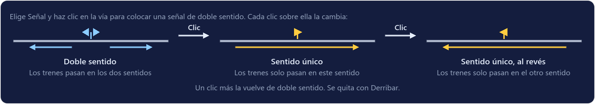

Señales
Mantener los trenes separados.
Las señales dividen una línea en bloques para que los trenes se esperen y no choquen. Para empezar no necesitas ninguna: los cruces y los apartaderos ya mantienen separados los trenes. Las señales dejan que más trenes compartan una línea con mucho tráfico.
Poner señales
- Elige Señal (9) en Ferrocarril y haz clic en un tramo de vía. Cada una cuesta 600 $.
- Las señales van en vía recta o diagonal, no en curvas, cruces, andenes ni pasos a nivel.
- Haz clic otra vez en una señal para hacerla de sentido único, otra vez para el sentido contrario y una más para doble sentido.
- Las señales se quitan con Derribar.


¿Hacia dónde apunta?
- Con Señal elegida, cada señal muestra una flecha encima: con punta en los dos extremos si es de doble sentido, y con una sola punta si es de sentido único, apuntando hacia donde pueden pasar los trenes.
- La señal bajo el ratón muestra en blanco cómo quedaría con un clic, y la nota junto al ratón lo dice con palabras.
- Sin la herramienta, fíjate en las luces: una señal de doble sentido tiene una luz en cada cara del poste; una de sentido único tiene una, mirando a los trenes que deja pasar.
Bloques
- La vía entre dos señales es un bloque. Un tren solo pasa una señal cuando el bloque siguiente está vacío; si no, espera.
- Cada cruce es un bloque propio, con señales o sin ellas. Un tren solo entra en un cruce cuando está libre, y también la vía por la que sale de él, hasta el siguiente cruce o señal.
- Los trenes solo esperan en las señales y delante de los cruces. En otros sitios, los trenes que van por la misma vía chocan entre sí: los dos quedan destrozados, con todo lo que llevan, y los restos cortan la línea durante unas semanas.
- Una señal de sentido único solo deja pasar los trenes en su sentido, y los trenes planifican la ruta contando con ella.
Accidentes ferroviarios
- Cuando dos trenes chocan, los dos quedan destrozados con todo lo que llevan, y no se devuelve nada. Las noticias lo cuentan, y del lugar sale humo durante unos días.
- A un tren en un depósito no le puede chocar nadie, ni a uno que pasa bajo un puente que otro tren está cruzando. Los autobuses y los camiones nunca chocan.
- Durante el mantenimiento, los vagones que quedan fuera del depósito mantienen ocupada la vía.
- Un accidente cerca de una localidad reduce la valoración municipal de cada empresa implicada. Consulta Ayuntamientos.
- Para llevar más de un tren por una sola vía, ponle apartaderos donde se cruzan los trenes.
Siguiente: Apartaderos.